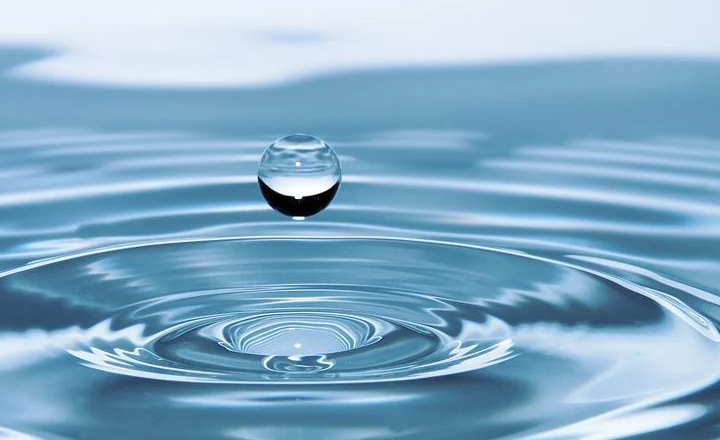

Where is Earth’s Water?

Earth's water is (almost) everywhere: above the Earth in the air and clouds (atmosphere),
on the surface of the Earth in rivers, oceans, ice (hydrosphere),
plants, in living organisms (biosphere), and inside the Earth (geosphere).